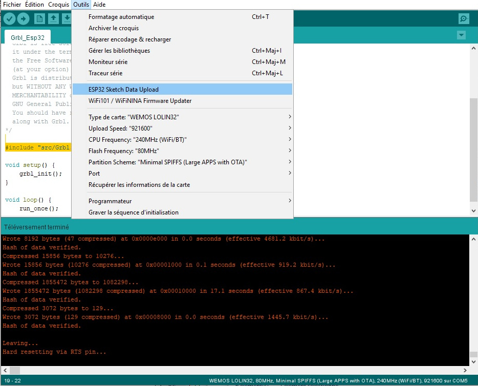
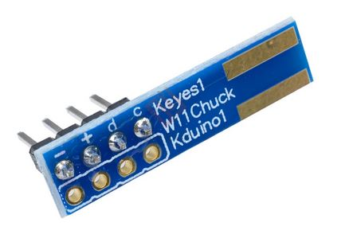

Logiciels¶
- Auteur
J.Soranzo
- Date
Octobre 2020
- Societe
VoRoBoTics
- Entity
VoLAB
Choix¶
Il y a plusieurs aspect à aborder.
Le firmware
le logiciel de dialogue du PC vers GRBL
Le logiciel de génération du g-code
Le logiciel de desgin des pièces. Pour ce dernier point c’est plutôt simple : Fusion360, ou FreeCAD.
Le firmware : on va tenté le coup avec GRBL
Il en existe une version dédiée aux cartes à base de MEGA2560 1
Pour ce qui est de l’envoi du g-code il y a universal G-code Sender 2
Autre Logiciel¶
Vectric Aspire 3 vu dans vidéo Youtube de la chaine Isodesign 4
Payant mais avec une version free trial pas limité dans le temps. Coûte 2160€
GRBL¶
Même si il existe une version Mega2560, ça pique c’est visiblement pas ARDUINO friendly
Il y a les GRBL configurations 6 : $0 à $132
Mais aussi les Grbl v1.1 Commands 5 : $X, $$, $G…
Installation / Configuration GRBL 1/2 sur la chaîne CrazyMakers 9
La procédure est géniale !!! Mais attention du coup les source se retrouve dans librairie Arduino !!!
Avertissement
La version téléchargée dans la carte est dans : ...\Documents\Arduino\libraries\grbl
Modifications apportées dans le fichier config.h:
#define DEFAULTS_RAMPS_BOARD
#define CPU_MAP_2560_RAMPS_BOARD (lignes décommentées - les 2 autres au dessus commentées)
#define HOMING_FORCE_SET_ORIGIN: ok
#define HOMING_SINGLE_AXIS_COMMANDS
GRBL Steps Per mm – How to Fine Tune Your Settings sur diymachining.com 10
Adresse du fichier original sur diymachining 11
Les commandes de configuration de GRBL se trouve ici 6
Nos réglages:
$0=10
$1=25
$2=0
$3=5 : inverse X et Z
$4=0
$5=0
$6=0
$10=17 : report fin de course mask 16
$11=0.010
$12=0.002
$13=0
$20=0
$21=0
$22=0
$23=0
$24=25.000
$25=500.000
$26=250
$27=1.000
$30=1000
$31=0
$32=0
$100=50.270
$101=50.270
$102=50.270
$110=500.000
$111=500.000
$112=500.000
$120=20.000
$121=20.000
$122=20.000
$130=200.000
$131=400.000
$132=200.000
Vérification des fins de courses. Contrairement à Marlin, grbl n’implémente pas la commande M119. A la place, il faut commencer par activer un report avec $10=17 (pas très bien documenté sur le wiki GRBL)
Signification réelle, à revoir:
// #define HOMING_FORCE_SET_ORIGIN // Uncomment to enable.
Informations complémentaires sur lesporteslogics.net 12
Mise au point¶
?<Idle|MPos:-0.995,-399.005,-0.995|FS:0,0|Ov:100,100,100>
Après un $HX, Y et Z
Mauvais comportement de Y
$3=0 et $23=2 donc on a seulement la direction de homing Y qui est inversée.
$HX
G0 X-50.0
?<Idle|MPos:-6.008,-399.005,-0.995|FS:0,0>
G0 X-100.0
?<Idle|MPos:-55.998,-399.005,-0.995|FS:0,0>
-100.0 = -56mm
-50.0= -6mm
-60.0 = -16mm
Cotes coroborées par la commande ? bien que il semble que le 0 soit décallé de 45mm vers la droite
la commande $# révèle:
[G54:44.000,0.000,0.000]
[G55:0.000,0.000,0.000]
[G56:0.000,0.000,0.000]
[G57:0.000,0.000,0.000]
[G58:0.000,0.000,0.000]
[G59:0.000,0.000,0.000]
[G28:0.000,0.000,0.000]
[G30:0.000,0.000,0.000]
[G92:-44.000,0.000,0.000]
[TLO:0.000]
[PRB:0.000,0.000,0.000:0]
G10 P1 L20 : permettrait de changer cet offset! error 26
error 26: A G-code command implicitly or explicitly requires XYZ axis words in the block, but none were detected.
G10 L2 P1 X0 Y0 Z0 (révoque les décalages en X, Y et Z du système N°1)
Cook boock¶
$H ($HX, $HY… si) $$ voir la config
? = Voir les fins de courses
envoi de G code: G0 X-50.0 (ne pas oublier le .0)
$21=1 hard limit n’est pas pris en compte quand on envoi des g-code en manuel.
Pb homing switch Y¶
Simplement en permuttant les 2 cable DB9 entre X et Y a résolut le pb.
La solution semble être matériel : condensateur sur le signal.
Connaître la version¶
$I : ident
le 02/10/2021 nous avions:
[VER:1.1g.20180813.Mega:]
[OPT:VNM+ZH,35,255]
Avant recherchement arduino avec: CNC\projet\04-realisation\grbl\grbl-master\grbl
Fichier : grbl.h modifié.
Version plantante !
Version fonctionnelle : grbl-Mega-edge.zip
Essais du 16/04/2022¶
essais moteur Z à 1/2 de pas mode 2A meilleurs résultats.
Mise au point finale avec GRBL 8bits¶
Avertissement
Au 30/04/2022 GRAVURE OK pour la deuxième fois
Réglage des drivers¶
le 30/04/2022:
Essais:
2/A microstep : 1-0-1 $100=100.540 axis travel resolution, step/mm OK déplacement Z OK valeur déplacement Ok
2/B microstep : 0-1-1 $100=100.540 axis travel resolution, step/mm OK déplacement Z OK valeur déplacement OK
1/4 microstep : 1-0-0 $100=201.080 axis travel resolution, step/mm OK déplacement Z OK valeur déplacement OK
1/8 microstep : 0-1-0 $100=402.16 axis travel resolution, step/mm OK déplacement X et Y OK valeur déplacement OK Le moteur tourne encore mieux choix gardé
1/16 microstep : 0-0-1 $100=804.32 axis travel resolution, step/mm OK déplacement Z OK valeur déplacement OK à garder avec $100=800.000 choix terminal
1/32 microstep : 0-0-0 $100=1588 axis travel resolution, step/mm OK déplacement Z OK valeur déplacement OK
Réglages terminaux
X $100 : 1/8 microstep : 0-1-0 $100=402.16 axis travel resolution, step/mm
Y $101 : 1/4 microstep : 1-0-0 $101=201.080 axis travel resolution, step/mm
Z $102 : 1/16 microstep : 0-0-1 $100=800.000 axis travel resolution, step/mm
Marlin¶
Site fort intéressant Marlinfw.org 13
Attention Marlin 2.x ne se compile qu’avec vsc et plateform io
Donc implenté Marlin 1.1
cf dossier:
04-realisation\Marlin-1.1.x
Configuration:
Dans configuration.h¶
Type de drivers ligne 550 environ
définition du pining ???¶
Dans quel fichier ? En même temps on est compatible RAMPS: pins_RAMPS.h
Modification des lignes:
#define X_MIN_ENDSTOP_INVERTING true // set to true to invert the logic of the endstop.
#define Y_MIN_ENDSTOP_INVERTING true // set to true to invert the logic of the endstop.
#define Z_MIN_ENDSTOP_INVERTING true // set to true to invert the logic of the endstop.
//...
#define DEFAULT_MAX_FEEDRATE { 500, 500, 2.25, 45 }
//.. pas encore touché
#define DEFAULT_AXIS_STEPS_PER_UNIT { 80, 80, 4000, 500 }
J’ai passé le feedrate à 15unit/s en effet avec 80step/mm 80*15 = 1200 step/s
Valeur max 17unit/s à 80pas/mm voir 16 (16*80=1280)
Nos vis à billes auraient un pas de 39.78/10tour soit 4mm/tour les moteurs sont sur du 200pas/tours
soit 50,27 pas/mm
Config réelle¶
le 22/05/2020, premier run moteur X tourne dans le mauvais sens. Nous avons permutté les fils des bobines moteur côté carte TBmachin. X déplacement max théroique environ 300 mais marlin nous limite à 215mm
Ligne 885 : #define X_BED_SIZE 300
Nouvel architecture électronique GRBL 32bits¶
Introduction¶
Suite aux problèmes de pertes de pas sur l’axe X, nous avons décidé de changer d’électronique pour passer sur une carte à base d’ESP32.
Préparation¶
Site : GRBL 32bits Board V2.0 14
config partie écran:
#define LOCAL_IP "192.168.1.44" // fix IP address
#define GRBL_TELNET_IP "192.168.1.43" // IP address of GRBL_ESP32 telnet server (as defined in GRBL_ESP32)
Compilation de la partie firmware écran non réussi sur ARDUINO 1.8.9
Réussie sur Lattepanda, fraîche install ARDUINO 1.8.18 + les 4 lib fournies sur le site
GRBL programmée par le même cheminement
Liste des tests¶
connection web à la base @IP .44 OK
connection web à la partie écran @ip .43 OK
mouvement des axes OK
évaluation précision des mouvements
hard home XYZ OK
- transfert fichier carte SD OK
base OK
Ecran OK
essai Nunchuck ECHEC
personnalisation des boutons (écran) OK
Essai de tracé d’un cercle ECHEC PARTIEL
tester le system de homing OK
test palpeur outil OK
Écueil 1: upload index.html.gz impossible¶
Essais : Après upload du fichier index.html.gz de /data lors des premier essais l’écran dans
le navigateur restait bloqué sur Loading…
D’après les commentaires sur le forum, il est possible que cela soit du entre autre à un fichier corrompu dans le file système, j’ai du effacer la mémoire avec esptools:
esptool.py --port COM7 erase_flash
Puis programmer les fichiers via la commande Arduino : ESP32 Sketch data Upload…
{kind=link}
Pour cela il faut installer une extension dans ARDUINO :
Écueil 2 : écran blanc¶
config.h pour l’écran
Si écran blanc alors
#define TFT_CARD_VERSION 1 écrire 2
Écueil 3 : pas de connection wifi¶
Pas de onnexion au WIFI. En branchant un terminal on voit juste après:
[MSG:Mist coolant on pin GPIO(22) ]
Probablement pb d’antenne donc réception difficile
Note
Adresse ip fixée à 192.168.1.43
Écueil 4 : pas de détection en HZ¶
08/01/2022 : Pas de détection du HZ
Pb électrique ? Connection vérifiées OK
pb électronique ? Solution : coupé la broche du switch du petit pcb et souder le fil en directe.
Écueil 5 : Nunchuck non fonctionnel¶
The I2C address of both Wii Nunchuks is 0x52.
Scan I2C réalisé et retourné 0x52 pour les 2 NC (la bleu et la blanche)
Programme de test l’Arduino se plante
Video à regarder : https://www.youtube.com/watch?v=KPBj5rZo6bg
{kind=link}
scanner i2c : CNC\projet\04-realisation\nunchuck\i2cScan
https://github.com/infusion/Fritzing/tree/master/Nunchuk
https://www.xarg.org/2016/12/using-a-wii-nunchuk-with-arduino/
Demo avec processing ok
recherche dans le code de la CNC controleur
Solution : au final détection d’une broche défectueuse sur l’ESP utilisé. Conséquence : remplacement de la carte ESP32. Tout est rentré dans l’ordre.
Écueil 6 : utilisation de Estlcam : x inversé¶
Solution select all path miror
Logiciel de pilotage PC <-> machine¶
UGS ou Universal gcode Sender¶
Universal G-Code Sender
Logiciel écrit en java, ne s’installe pas vraiment il faut lancer l’exécutable dans $rep$\ugsplatform-win\bin
Site officiel pour le téléchargement 16
dl dans : 04-realisation (install par copier/coller dans c:/program/ugsplatform-win), lancer directement:
ugsplatform-win\bin\ugsplatform64.exe
Avertissement
Dans le github, ce sont les sources mais il y a un lien en focntion de la plateform utilisée.
Site de la doc de UGS 17 le moins qu’on puisse dire c’est qu’il est pauvre !
COM7, 115200 bd : ALARM !!! Pourquoi ? pace ke on avé po l’alim 12v
jog faire depuis la position 0, des Y-, des X- et des Z- (vers l’arrière, vers la gauche et vers le bas)
Cours maximum: X -300mm, Y-210
ALARM¶
Pour virer l’alarm soit le bouton unlock soit la commande $X
Télécommande à base de pavé numérique¶
L’idée est de fair ce qui est décrit dans cette vidéo : HOW TO: Keypad Pendant with UGS for BobsCNC 18
Problématique : comment de pas affecter les touche numérique au commande ce qui interdit alors de saisir des nombres ?
USB Pendant for Universal Gcode Sender (UGS) for CNC Machining 19
<unassigned> : \\?\HID#VID_05A4&PID_9840#6&CE7F884&0&0000#{884B96C3-56EF-11D1-BC8C-00A0C91405DD} [47645033] : keyboard
Avec un pavé numérique simple on ne peut pas capturer le code des touche : pavé testé:
TARGUS AKP10EU
{kind=link}
bCnC¶
Premier point Wiki en français assez complet sur fablabo 20.
Il y a un github
Visiblement c’est full Python.
Installé le 3/7/21 : pip install bCnC
Lancement python -m bCNC
Génération du G-code¶
Procédure INKSCAPE¶
Tracer: classique Inkscape puis sauver le ficher (sous un autre nom c’est mieux pour gcode tools)
plugin gcode tools site en russe ! https://cnc-club.ru/gcodetools/
site tuto GÉNÉRER UN G-CODE AVEC INKSCAPE 22
Faire un miroir pour notre machine. sélectionner tous les chemins.
Extension/gcodetools :
points d’orientation (mode 2 ou 3 points ! Prof Z 0.2)
Bibliothèque d’outils => crée du texte : shape ? W ?
Chemin vers g-code
Avec Estlcam¶
A venir… (19/3/22)
Depuis carte mentale¶
Aspect logiciel
MACH3
LINUXCNC
CNCDrive
https://www.masso.com.au/product-category/masso-cnc-controllers/
Raspberry Pi CNC Controller
https://www.youtube.com/watch?v=u35L0jGCqFc
ne génère pas le G-code, passe par fusion360
OpenCNC
https://cnc.js.org/
https://www.inventables.com/technologies/easel
Machinekit
http://www.machinekit.io/
Y parait qu'on peut faire depuis freecad !!!
- 1
- 2
- 3
- 4
- 5
- 6(1,2)
- 7
- 8
- 9
- 10
- 11
http://www.diymachining.com/downloads/GRBL_Settings_Pocket_Guide_Rev_B.pdf
- 12
http://lesporteslogiques.net/wiki/outil/cnc_colinbus-configuration
- 13
- 14
https://www.makerfr.com/cnc/grbl-32bits-board-v2/liste-des-pieces-grbl-32bits-board-v2-0/
- 15
https://randomnerdtutorials.com/install-esp32-filesystem-uploader-arduino-ide/
- 16
- 17
- 18
- 19
https://www.instructables.com/USB-Pendant-for-Universal-G-Code-Sender-UGS-for-CN/
- 20
- 21
- 22
https://openlab.utbm.fr/docs/generer-un-g-code-avec-inkscape/
- 23